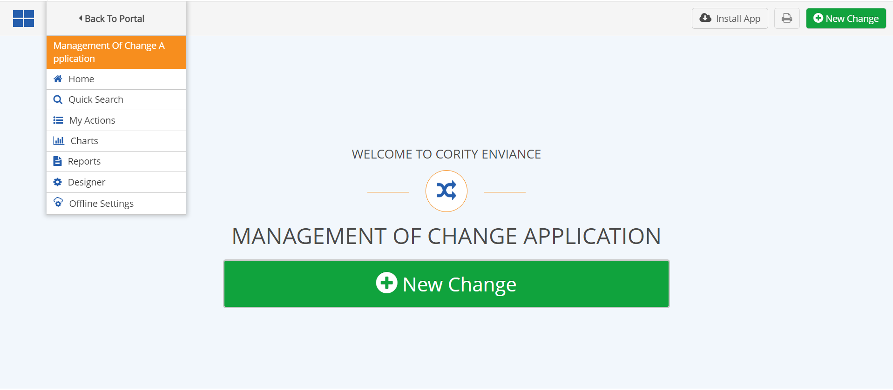
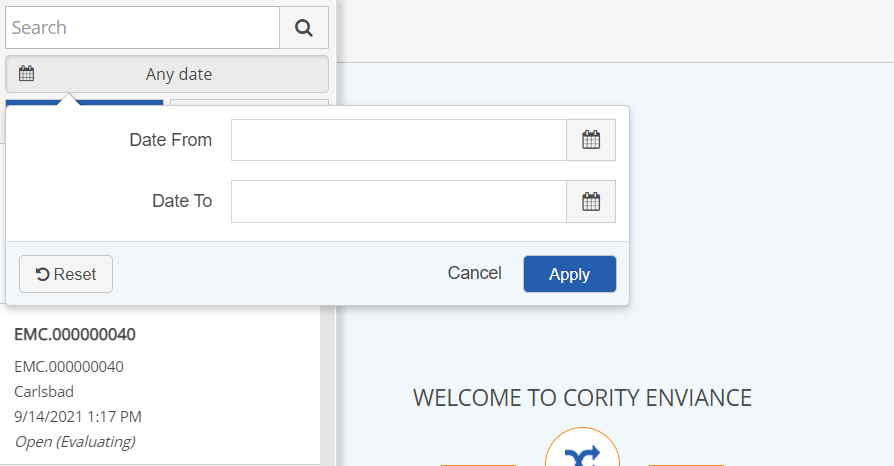
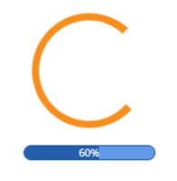
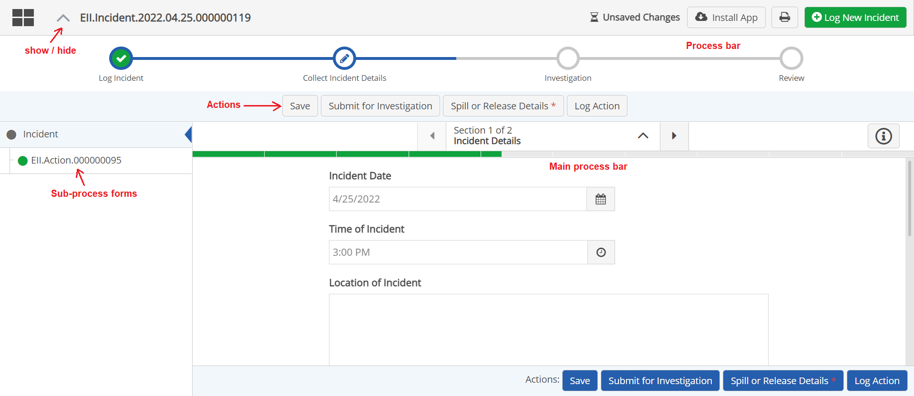

If you have access to only a single App, it will automatically load when you log in. If you have access to multiple apps, or to Advanced Calculations (EMS), you will need to select the app from the main menu.
After opening the App in a separate tab, add the page to your browser bookmarks to access it directly in future. If you will be working offline, you will need to use this link to access the offline data cache.
From the default login screen you can create a new Item (or record) using the large button on the welcome page or the small button top right.
For other options, select the "four square" menu button top left.

Access a specific item:
From the main menu dropdown, select Quick Search.
A list of current items is displayed, with summary info.
You can use the search options to filter the list. Search by date range or a text string. The text search includes all visible text fields in the summary (ID, facility, name, status).

When you are offline, only the records that have been downloaded for offline use will be displayed. When you re-connect, refresh the search to search online records.
Select an item from the list to open the record.
When a selected record/form is loading a progress bar is displayed beneath the spinning circle.

The details for item are displayed. Tabs contain related forms for sub-processes or requested actions.
An optional Process Bar may be displayed to give an overall view of the workflow progress. You can hide or show the Process Bar with the button to the right.

From the main menu dropdown, select My Actions. The actions (or other secondary items assigned to you are displayed.
Other menu items are: